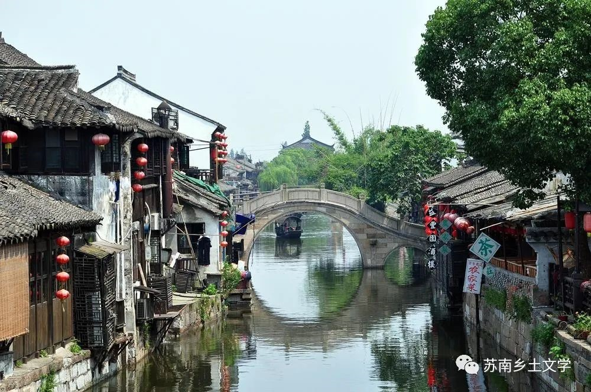
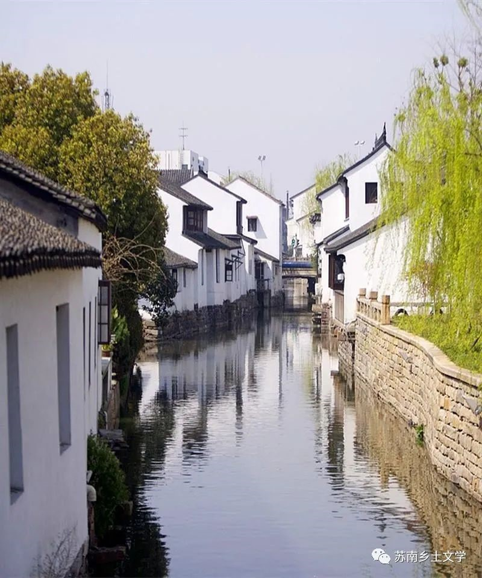
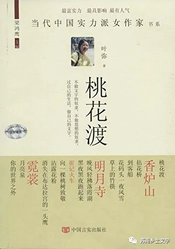

叶弥
“白菊湾花码头镇”系列作品
01 作品简介
“白菊湾花码头镇”系列小说是叶弥近十年来以"白菊湾花码头镇"为主要叙事背景创作的系列短篇小说。在这些短篇小说中,叶弥将笔墨聚焦于新世纪的江南乡村,勾勒了一幅幅当代乡村的生存图景。作品以“我——一个来到乡村生活的城市女性知识分子的视角展开在江南水乡小村镇发生的各种故事。
- 
- 
“白菊湾花码头镇”系列小说是叶弥近十年来以"白菊湾花码头镇"为主要叙事背景创作的系列短篇小说。在这些短篇小说中,叶弥将笔墨聚焦于新世纪的江南乡村,勾勒了一幅幅当代乡村的生存图景。作品以“我——一个来到乡村生活的城市女性知识分子的视角展开在江南水乡小村镇发生的各种故事。
02 生活状态
1、生活节奏缓慢
也许是生活节奏缓慢的原因，船老大说话的声音也是慢吞吞的，黑红的脸上挂着微笑，很乐意与人拉家常。
——《桃花渡》
2、半农半渔
有些农家有船，除了种田，还不时下湖去打鱼，是半渔半农的。
——《桃花渡》
3、乡村更接近自然，自然给人带来独特的心灵体验
我现在好奇，温情，平静，与大自然融为一体，我从未经历过这样的感受
——《桃花渡》
4、乡村的物质困惑
她很实际地解剖了自己下学期上大学二年级时将会产生一些物质上的“困惑”，而她的农民家庭无法给她解除这种“困惑”。
——《桃花渡》
5、缺乏夜生活
乡下人没有夜生活，一到夜里，路上杳无人迹
——《香炉山》
6、迷信的习俗
增寿确实是一只母鸡，养着它是为了给苏的亲娘增寿
——《香炉山》
7、缺乏对外界的信任
村民们对陌生人都很冷漠，都疑心重重。
——《香炉山》
8、宗教
村口那座亮着灯的土房子是乡村的小教堂
——《香炉山》
一个小小的村子，名堂还不少，小佛堂，小教堂，翰林骨塔，都是有些岁月的。
——《到客船》
03 女性生存状态
1、对性比较保守
而且镇上的人都说她活该。没有结婚就同居，还引狼入室，这不是活该是什么？
——《香炉山》
2、乡村女子刻板印象，另一方面也是反映乡村女性生存的一种困境——只有外化为泼辣粗野的形象才能够捍卫自己的利益
我发现她的语调和用词也是温文尔雅的。这种说话方式不应该属于她们，她们理应泼辣粗野，这样才能捍卫自己的利益。
——《拈花桥》
3、物化女性 城市女性知识分子成为男性更高级的饰品
他看我的目光，我也读得懂，是骄傲，是占有了一样贵重东西。这样东西就是我：一个城里的年轻女人，有知识有文化，高傲独立，写的诗集在新华书店的柜台放着。
——《拈花桥》
4、女性依附权力生存
她的娘家侄儿正当着市长的秘书，她在家里也享有特权。
——《到客船》
5、重男轻女，因延续所谓的“香火”而致贫，女性在家庭中的权利和义务不成正比
白杨说：“我家穷，罚款罚穷的。父母要生男孩，生了五个女孩，——第六个才是男孩，今年才六岁。”
——《到客船》
我知道这里的女人是没有什么地位的，女人生孩子，教育孩子，做家务，干地里的活，承担至少一半的家庭开支……在家里有诸多义务，却是没啥权利的。
——《草上的竹筷》
6、乡村女性的“逃离”
绿杨和婆婆
——《到客船》
7、消费女性身体，磨灭女性的尊严
脱衣舞团
——《晚风轻拂落霞镇》
04 城市文明入侵后乡村的变化
1、富人在乡村建设别墅区，带来务工的外地民工
村子后面一大片种菜的熟地上，开来了六十几个造房子的民工，造四十幢别墅
——《到客船》
2、外界物质利益的刺激打破原本乡村平静生活，人心异化，精神的力量削弱，浮躁的生活氛围，追逐利益，唯利是图，虚荣
没想到来了这帮民工，又赌又嫖，把我们村里的男人都带坏了。
——《到客船》
3、乡镇生活/外来人口几乎与本地人口持平
镇区本地人口为六万，外来人口五万。
——《晚风轻拂落霞湖》
4、商业化开发——民工潮
那里到处搭着简易棚，住着一百二十多个民工。
——《晚风轻拂落霞湖》
5、乡镇官员腐化
他真正的收入渠道也不在镇政府的财务帐上，而是在这些场合里达成的交易中。
——《晚风轻拂落霞湖》
6、低俗趣味、低俗的产业
脱衣舞团
——《晚风轻拂落霞湖》
7、村庄逐渐富裕
这若干年过去的时间里，村子富裕起来了，油灯换成了电灯，茅屋换成了瓦屋，家家有了粮屯。
——《霓裳》
8、寺庙景点化，旅游开发
先是白菊湾旅游部门的领导发言，再是白菊湾宗教局的领导发言……一直到景区管理部门的领导发言后，才轮到老和尚发言。
——《草上的竹筷》
05 感悟
和苏童相似的地方是，叶弥塑造了一个苏南小乡村——“白菊湾花码头镇”，作为系列小说开展的共同背景。与苏童“枫杨树故乡”不同的是，“白菊湾花码头镇”更具有现实性。作者在小说中的存在感非常强，几乎都是以“我”——一个来到乡村居住的城市女性知识分子的视角展开的。
和一般的苏南乡土作家类似，叶弥在小说中也选取了大量以“水”为中心的自然景观，反映了一些诸如生活节奏、生产状况、精神生活、城市文明入侵等一系列乡村现象。
同时，作为一位女性作家，叶弥的乡村小说有着强烈的女性视角。她的小说中有很多反映苏南乡村女性生存现状的描写，通过城市女性知识分子的视角，对两性关系、女性地位和困境、女性的物化、乡村女性的“逃离”等一系列现象进行了书写。